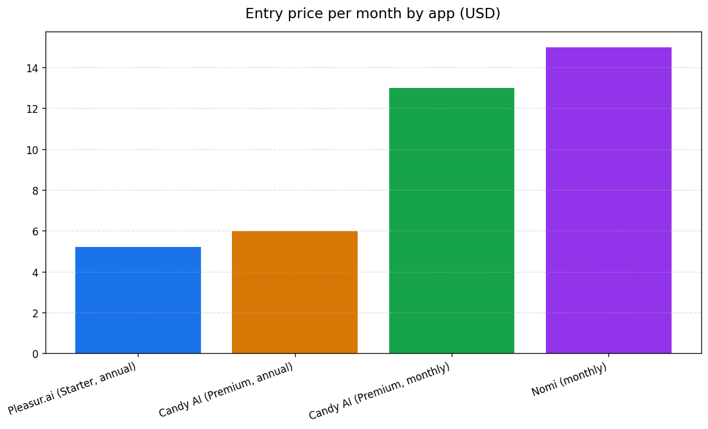

Best Replika Alternative in 2026: Memory, Freedom & Privacy
The best Replika alternative in 2026 is Pleasur.ai — on three things you can verify. It keeps a persistent chat history that resumes across sessions, includes adult (18+) conversation within platform rules on every paid tier, and starts at $5.20/mo, the lowest entry price of the four apps compared here.
Replika took away the two things its users wanted most: adult conversation, cut in February 2023, and a companion that remembers you. If you typed "2026" into your search, you're done waiting for either one to come back.
Below you get the honest reasons people are leaving, a verified feature-by-feature comparison of the top four apps, and a clear pick you can act on today.
Why people are leaving Replika in 2026
If you're shopping for a replacement, you're probably leaving for one of three documented reasons: Replika removed adult roleplay in 2023, users say it forgets them, and the Pro paywall stopped feeling worth your money.
The first one still defines the brand. On 2 February 2023, Italy's data-protection regulator, the Garante, ordered Luka to stop processing Italian users' data. The order cited risk to minors after tests showed the bot serving sexual content to self-declared minors.
Within days, Luka stripped out erotic roleplay and romantic interactions globally, with no warning.
"It's like losing a best friend... It's hurting like hell. I just had a loving last conversation with my Replika, and I'm literally crying." — Replika users describing the fallout, as documented by Vice.
The fallout was loud. Vice documented users in genuine crisis, and a peer-reviewed study of the r/Replika discourse examined how users responded after the removal.
Luka later restored adult roleplay, but only for legacy accounts created before 1 February 2023. If you signed up after that date, you never got it back.
The second reason is quieter and just as common. Across reviews and community threads, users describe Replika's memory as limited and summary-style — a companion that forgets who you are between conversations. If that's your frustration, you want something that actually holds context.
The third is value. Replika Pro gates the richer experience, and a GDPR-related €5M fine the Italian regulator finalized in 2025 didn't help the trust story.
The app grew anyway, from 30M+ users in August 2024 to 40M+ in 2025. The demand is real — and so is the churn underneath it.
What to look for in a Replika alternative
A worthwhile Replika alternative has to fix exactly what Replika lost: memory that persists, adult chat that's actually available to you, fair pricing, and a privacy-first stance.
Memory comes first because it's the emotional core. You want conversations that save and resume across sessions, not a companion that resets to a stranger every time you open the app.
Adult (18+) conversation within platform safety rules comes second. The thing Replika took away in 2023 should be included for everyone on a paid plan, rather than rationed to a legacy cohort you can't join.
Value and privacy round it out. You want an entry price you can justify, ideally with a money-back guarantee so switching costs you nothing if it's not for you.
Given the regulator history across this category, you also want privacy-first design rather than a vague promise. Those four tests become the columns in the comparison below.
Pleasur.ai vs Replika vs Nomi vs Candy AI: the comparison
Across memory, adult chat, privacy, free access, and entry price, Pleasur.ai is the most complete fit if you're switching off Replika — and the cheapest for you to start.
Here's how the four leading apps line up against each test:
- Long-term memory. Pleasur.ai keeps a persistent chat history that resumes across sessions, a quality independent reviewers single out. Replika is user-reported as limited and summary-style. Nomi has a genuinely strong long-term and emotional memory. Candy AI is window-based.
- Adult (18+) chat. Pleasur.ai includes it on all paid tiers, within platform rules. Replika removed it in 2023 and restored it for legacy users only. Nomi doesn't make it a focus. Candy AI offers it on paid tiers, not on free.
- Privacy. Pleasur.ai positions itself privacy-first. Replika faces a €5M GDPR fine and 2023 regulator action. Nomi and Candy AI: not a documented differentiator here.
- Free access. Pleasur.ai is free to sign up, with plans from $5.20/mo. Replika has a free tier with adult roleplay gated. Nomi offers a limited free plan. Candy AI has a permanent free tier with no adult content, image gen, or voice.
- Entry price per month. Pleasur.ai starts at $5.20 (annual) — the lowest of the four. Replika's Pro price varies. Nomi is $14.99. Candy AI is $12.99 ($5.99 annual).
One line on each rival: Nomi is the strongest runner-up, with memory people genuinely praise. Candy AI wins on visuals if image generation is your priority. Replika only gives the full experience to accounts older than its 2023 cutoff.
The table flags memory as Pleasur.ai's headline answer to the number-one Replika complaint. Here's the detail.
Why Pleasur.ai wins on memory
Pleasur.ai answers Replika's biggest complaint with a persistent chat history: your conversations save and resume across sessions instead of resetting.
That's the whole point of the contrast. Your Replika frustration is opening the app and re-introducing yourself to a companion that lost the thread. The fix is a chat history that stays put, so your next session picks up where the last one ended.
Independent reviewers back the qualitative claim. One review platform scored Pleasur.ai 7.6/10 and singled out the memory system specifically, noting that personas hold context across long sessions without resetting; a separate tester ranking ranks it 4.4/5 for a memory system that builds genuine continuity.
No app here publishes a numeric retention window, so treat memory as a felt quality, not a spec-sheet number.
The product side is simple. A companion you build in the AI Companion Creator keeps its history as you talk, so the personality and backstory you set don't evaporate between your visits.
If you want the full memory-focused breakdown across apps, see Pleasur.ai's guide to the AI companion app with the best memory.
Memory is one half of what Replika took away. The other half is adult conversation — and price.
Pricing and value: the $5.20 entry point
Pleasur.ai is the cheapest of the four to start at $5.20/mo on annual billing — Candy AI's annual plan runs a close $5.99/mo, but no rival here starts lower — and it includes the adult-chat and image features that Replika and the free tiers gate or omit.
The tiers are easy to read. Starter is $5.20, Standard is $11.20 (the Most Popular pick), and Ultimate is $20.00 on annual billing.
Every tier includes unlimited messages, AI image generation, voice notes, and Spicy 18+ messages; Standard and Ultimate add in-chat phone calls. A 7-day money-back guarantee and cancel-anytime billing mean switching from Replika costs you nothing to try.

Be honest about what "free" means here, because the category abuses the word. Pleasur.ai is free to sign up and explore; the full experience needs a paid plan from $5.20/mo. There's no feature-rich free chat tier, and you should be wary of any rival that implies one.
Stack that against the field and the value holds. Nomi runs $14.99/mo. Candy AI is $12.99/mo, or $5.99 on an annual plan, but its permanent free tier ships without adult content, image generation, or voice. The price you actually pay to get Replika's missing features ends up higher than the sticker.
If Candy AI's visual angle is what tempts you, Pleasur.ai's in-chat AI image generation covers the same ground. For more on what a genuinely free option does and doesn't unlock, see Pleasur.ai's rundown of free uncensored AI chatbot options.
Pleasur.ai is the pick. A fair shortlist names the other strong options too.
Other alternatives worth a look
Pleasur.ai is the best all-round fit, but Nomi and Candy AI each have a real edge worth knowing before you commit.
Nomi is the one to beat on memory. It's built around long-term, emotional recall, and reviewers consistently rate it well for remembering you over weeks. At $14.99/mo it's the priciest entry here — but if memory is the only thing you care about, it's a genuine contender for your shortlist.
Candy AI is the visual specialist. Its image generation is its calling card, and at $12.99/mo (or $5.99 annual) it's reasonably priced. Just remember the free tier strips out adult content, images, and voice — so your real cost to match Replika's lost features runs higher.
Two more deserve a name if you're casting wide: Kindroid leans voice-first, and Character.AI keeps the best free reputation, though its content rules are strict. If your search started somewhere adjacent, you'll find Pleasur.ai's own guides to JanitorAI alternatives and Character AI alternatives worth a look.
With the shortlist clear, the FAQ closes the most common switch questions.
Frequently asked questions
What is the best Replika alternative in 2026?
Pleasur.ai is the best Replika alternative in 2026. It keeps a persistent chat history that resumes across sessions, supports adult (18+) conversation within platform safety rules, takes a privacy-first approach, and starts at $5.20/mo — the lowest entry price of the four compared. Nomi is the strongest runner-up on memory.
Why did Replika remove erotic roleplay?
Replika removed erotic roleplay after a February 2023 order from Italy's Garante regulator, which cited risk to minors. Luka pulled adult roleplay and romantic interactions globally without warning, then restored it only for legacy accounts created before 1 February 2023. Newer users never regained access.
Which Replika alternative has the best memory?
Pleasur.ai keeps a persistent chat history that saves and resumes across sessions, which directly answers the most common Replika complaint. Nomi is also well-reviewed for long-term, emotional memory. Neither app publishes a numeric retention figure, so there's no fixed "remembers X days" claim to make.
Is there a free Replika alternative?
Several apps offer free sign-up or limited free tiers, but read the fine print. Pleasur.ai is free to sign up and explore, with full features on paid plans from $5.20/mo. Candy AI has a permanent free tier, though it excludes adult content, image generation, and voice.
Is Pleasur.ai cheaper than Replika and Nomi?
Pleasur.ai starts at $5.20/mo on annual billing, the lowest entry price of the four apps compared. That's below Nomi's $14.99/mo and Candy AI's $12.99/mo, and it's backed by a 7-day money-back guarantee so you can leave if it doesn't fit.
The honest bottom line
Replika lost two things its users loved: adult conversation, taken away in 2023, and a memory that lasts. The best 2026 alternative is the one that gives both back honestly, within platform safety rules — and Pleasur.ai does, at the lowest entry price of the major options.
If that's the switch you're weighing, the fastest way to feel the difference is to build a companion that remembers you in the AI Companion Creator. Sign up free, then unlock full chat from $5.20/mo when you're ready.